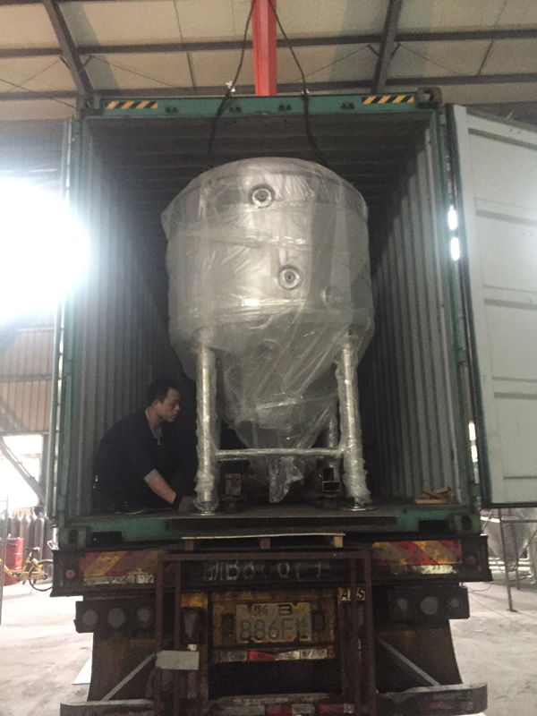
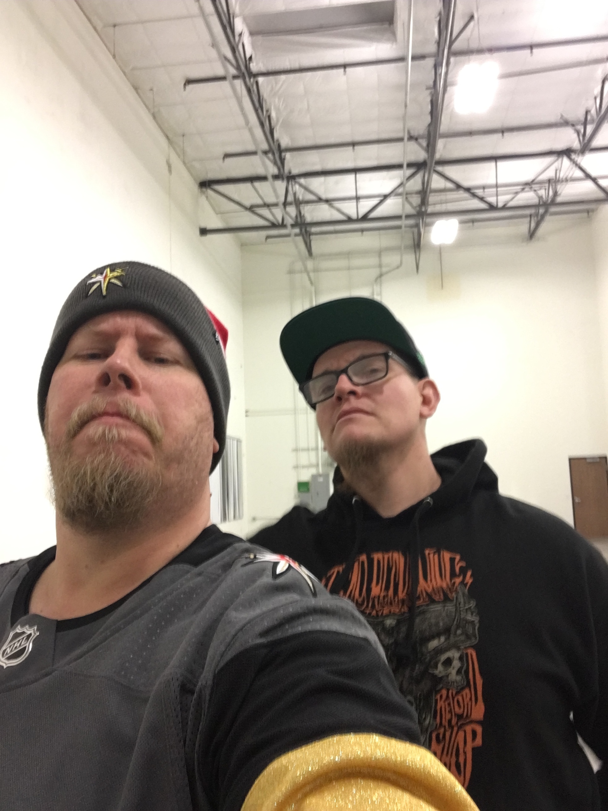

Astronomy Aleworks is a family owned business soon to be brewing and serving beer in the famous Booze District of Henderson, NV. Astronomy Aleworks will create works of fermented art using keen scientific principles inspired by the hard-working men and women who labored to bring the stars and planets closer to our hearts, not to mention the incredible zymurgists that pioneered the finest ales known to man or spaceman.
Beers
We plan to start with 5 core ales: Blonde Kolsch West Coast IPA German inspired Red American Hefeweizen Stout Of course,
our innovation will know only the bounds of science, fermentation, and good taste and as such we’re working in our top-secret
beer labs planning seasonals and specialty one-offs as you read this.
About Us
Astronomy Aleworks is the product of years of hard work and dedication from its four principal beer enthusiasts,
Raymond and Matt Brady, a locally based father and son duo, and tech-sector entrepreneurs Dom and Tom Tancredi, the prodigious
progeny of Raymond’s sister and founders of Dom and Tom, INC.
Located in the center of the Booze District.
Keep checking in to see updates on construction and our grand opening!
Until we open, we encourage you to visit our outstanding Booze District neighbors, Bad Beat Brewing, Crafthaus Brewing, Las Vegas Distillery, and Vegas Valley Winery!
Keep checking in to see updates on construction and our grand opening!
Until we open, we encourage you to visit our outstanding Booze District neighbors, Bad Beat Brewing, Crafthaus Brewing, Las Vegas Distillery, and Vegas Valley Winery!

Brewer Matt Brady (left) and Las Vegas Beer Expert, Pat Ohollaren looking cool and supporting the Golden Knights in the pre-build!
Astronomy Aleworks
7350 Eastgate Road, STE 170
Henderson, NV 89011
7350 Eastgate Road, STE 170
Henderson, NV 89011